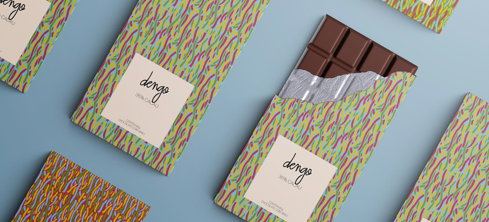
Dengo
Neste projeto, a proposta consistiu em investigar a diversidade cultural brasileira e traduzi-la visualmente em uma identidade gráfica, aplicada em superfícies, para a marca Dengo. O ponto de partida foi compreender o que significa ser brasileiro do norte ao sul do país e identificar elementos capazes de unir essa pluralidade em uma narrativa visual coerente.
DisciplinaDesign de Superfícies
Ano2025-2
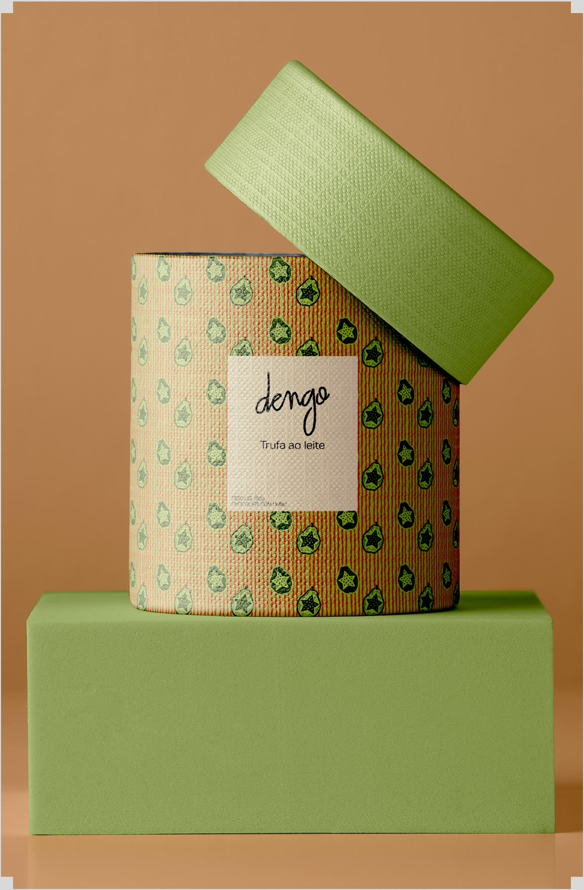
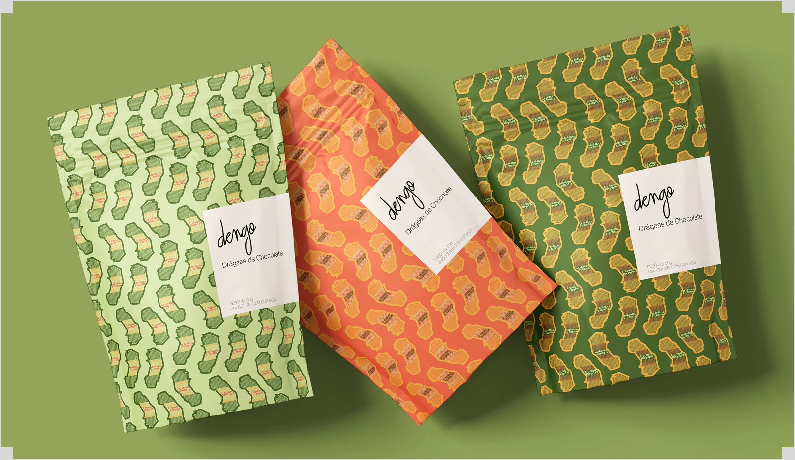
foi realizado um mapeamento sobre as três principais regiões produtoras de cacau no Brasil: Espírito Santo, Bahia e Pará.
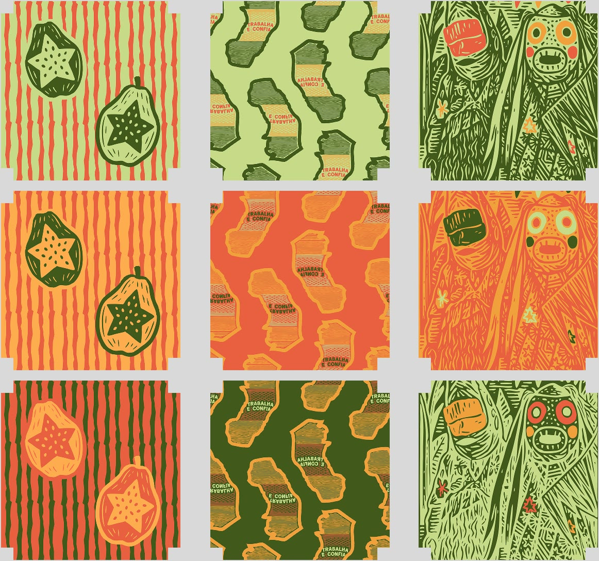
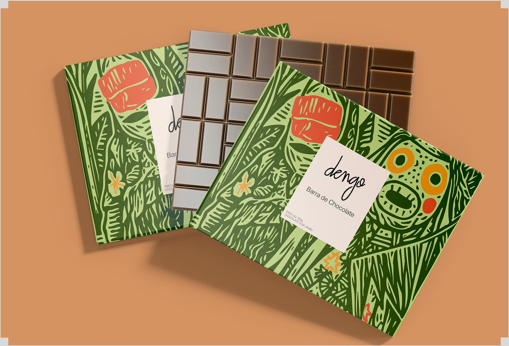
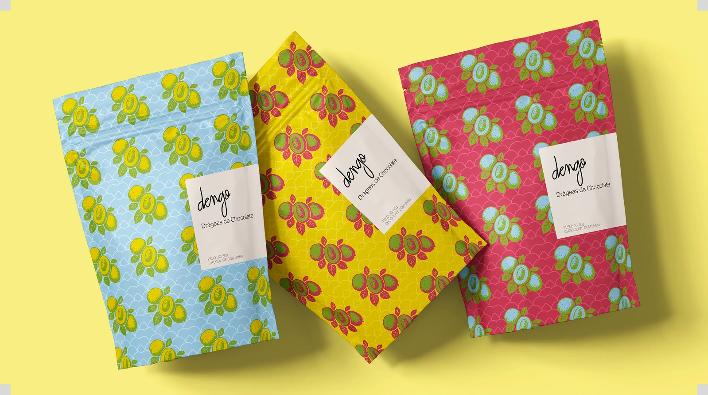
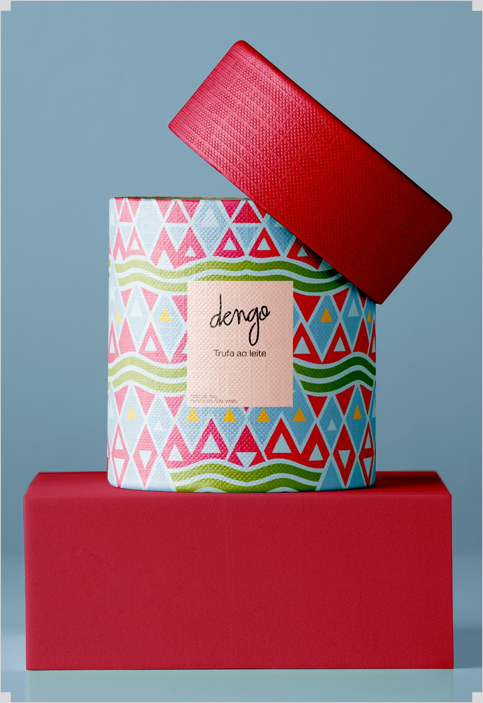
para cada estampa, envolveu a seleção de referências visuais, buscando reconhecer o que caracteriza cada regionalidade.
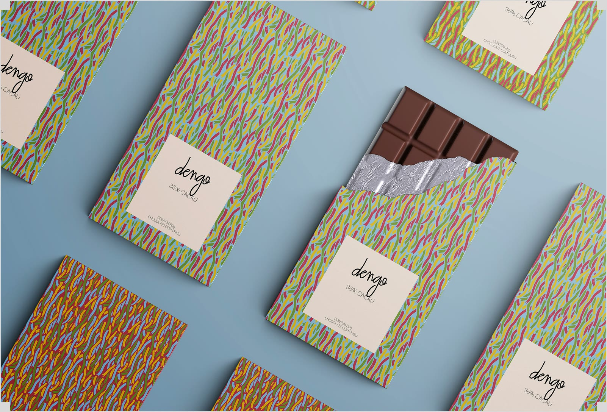
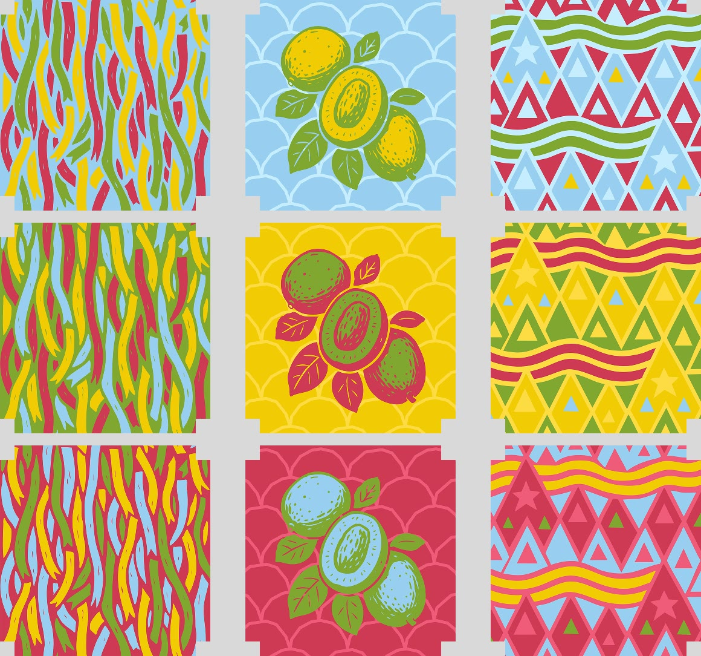
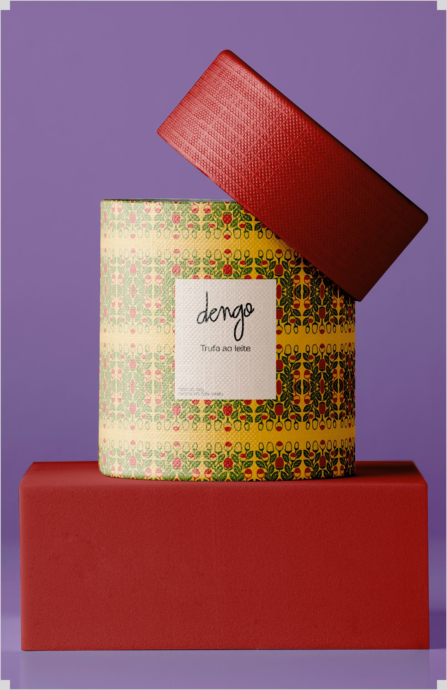
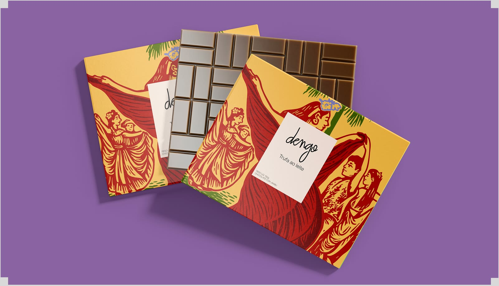
a xilogravura foi a técnica ideal para transmitir toda a essência de diversa, com o foco em transmitir uma linguagem genuinamente brasileira.
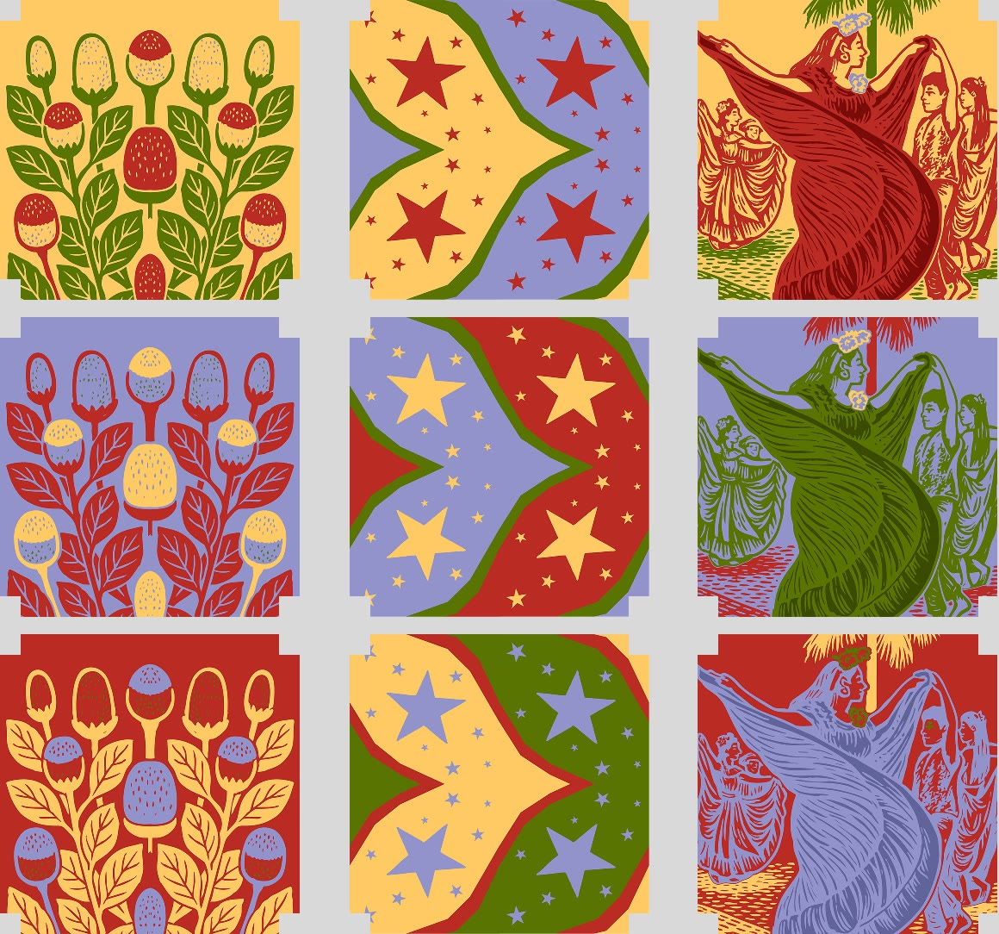
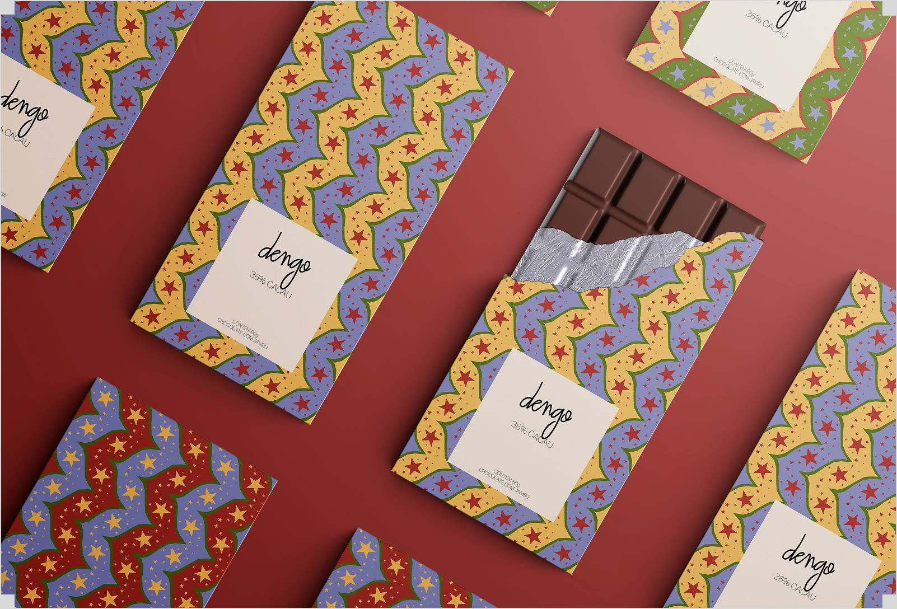
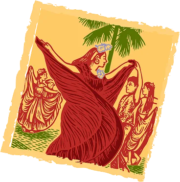
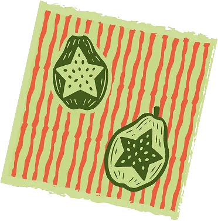
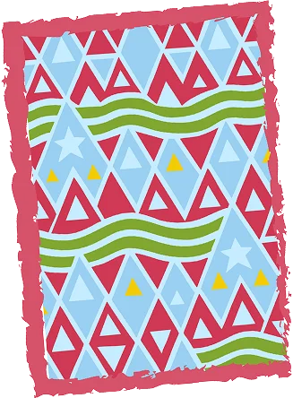
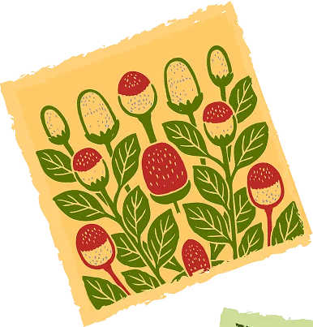
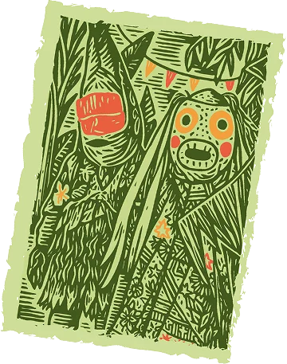
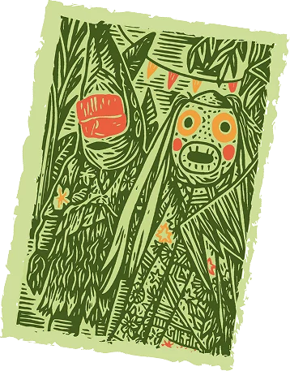
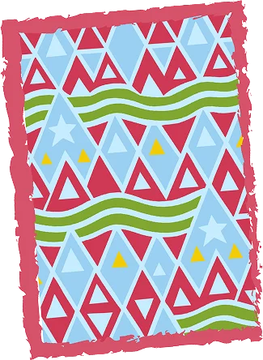
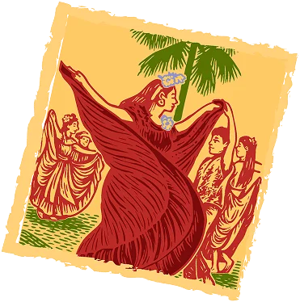
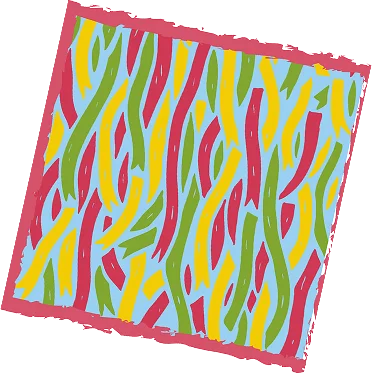